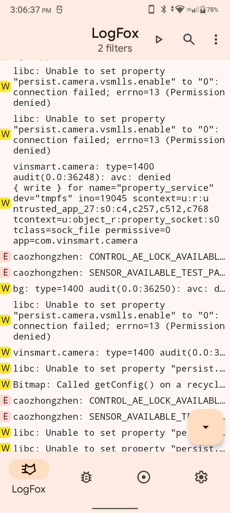

Category: Blog
Last modified: 2024-10-11 15:46
Decompiling, patching and recompiling Vsmart Camera (part 1/n)
Introduction
Welcome to my first "blog" post! Or whatever this kind of post is.
My journey with iOS jailbreaks has been stopped long ago, since my phone is no longer alive (freak wasted ~$10 for a battery then realized the phone can't be charged).
You may say I could use an emulator, but not in my Macbook Pro 2011. Hackintoshing my main PC did not success (the furthest was 2021 when I installed Catalina with networking! Slow but works).
Now I have an Android phone. Love to see it being rooted, but well, no OEM ROM (well, HTC phone). Not even bootloader unlocking thingy.
Let's talk about the main topic.
Vsmart, a long-dead local phone, smart home devices from Viet Nam, sold phones. The last generation comes with a modified Android 11.
It's name is VOS, version 4.


Taken from The Gioi Di Dong (World of Mobiles), a electricity stuff vendor.
Vsmart.net, which is seems to be Vsmart's official site, is not unreachable.
You can see that the update uses more transparency and blur effects.
Not the main topic either.
I took today and yesterday (at the time of the first post's commit) just to find and install VOS applications.
Some works, some even available in Play Store, some are OEM-specific (e.g the Launcher). Some do not work when installed (e.g Files, Assistive Touch).
Most are tied to the system, uses inner system permissions. The Camera app is one of them.
Prepare
I've found a lot of APKs online, but here you can get many APKs without tapping the search bar:
https://dumps.tadiphone.dev/dumps/vsmart/casuarina
Go to system/system/priv-app, where you will see a lot of packages and providers there. Grab any of them that you want, here I will pick VsCamera.
Download the APK.
The whole process is done in Android, with the help of Termux and Karbon the editor.
Install openjdk-21 and Android SDK in Termux.
Here is the APK to Java tool that I used.
Apktool is the tool I used to decompile the APK when I don't know how to compile the code back.
Actually I need the code from both tools, you will see why.
What's happening?
Easy: The app does not work because you're running in a non-Vsmart device.
Not any signing or permissions problem (they took me a while to fix that for VOS launcher, but after all, failed).
Find the string
Vsmart did not sell its phone to many countries, I only remember some phones being sold to Russia, that's all.
So the translation are not much, even though you see a lot of translations in values- inside the res folder.
The string we gonna find is named: app_not_support_error.
Easy.
Patch
The hardest work is here.
The decompiled source (both tools) contains a lot of a, b, c... alphabetical characters as folder name, file name, class name, even variables and methods name.
You will see something like c.a.a() or even worse.
After finding the error string at the Decompiler.com's decompiled code, I've found where it is:
if (c.b() == f.t) {
a(getString(R.string.dialog_app_not_support), getString(R.string.app_not_support_error), getString(R.string.dialog_ok), new io.reactivex.c.a()
{
public final void run() {
MainActivity.this.v();
}
});
return;
}
This piece of code is in /sources/com/bq/camera3/common/MainActivity.java.
c is com.bq.camera3.util.c, while f is com.bq.camera3.a.f.
Looking at how the c (compiled from DeviceUtils class) was made (according to the decompiler):
a() overloads return stuff about classes, RAM(???), android.os.Build's DISPLAY (A build ID string meant for displaying to the user - from developer.android.com), android.content.Context's version, set screen brightness, set notification interrupt filter, set vibration.b() is the thing we want. It returns an instance of com.bq.camera3.a.f, as we can see above. This function will check the device code name and return the right f for that.
com.bq.camera3.a.f class contains objects made for specific devices.
Now it's Smali code part, which is made by Apktool.
Smali, an Assembly-look-like language, replaces Java/Kotlin/whatever as the primary language in Apktool's decompiled code. A simple class would look like this:
.class public Lme/lebao3105/package/folder/name;
.super Ljava/lang/Object;
.source "name.java"
.field <private or public> <static if you want> name:L:<type>
.method <private or public> <static if you want> methodName(L<type>)L<returnType>
.end method
The class above is in me.lebao3105.package.folder.name package, the source file is "name.java", inherited java.lang.Object.
Before every type name is a L, don't know why.
The language supports goto and label definitions.
Here goes the device code name comparison:
sget-object v0, Landroid/os/Build;->DEVICE:Ljava/lang/String;
# the comparison started in the 104th line
.line 104
invoke-static {v0}, Landroid/text/TextUtils;->isEmpty(Ljava/lang/CharSequence;)Z
move-result v1
if-eqz v1, :cond_1
.line 105
sget-object v0, Lcom/bq/camera3/a/f;->t:Lcom/bq/camera3/a/f;
sput-object v0, Lcom/bq/camera3/util/c;->a:Lcom/bq/camera3/a/f;
goto/16 :goto_1
:cond_1
const-string v1, "pinus"
.line 106
invoke-virtual {v1, v0}, Ljava/lang/String;->equals(Ljava/lang/Object;)Z
move-result v1
if-eqz v1, :cond_2
.line 108
sget-object v0, Lcom/bq/camera3/a/f;->a:Lcom/bq/camera3/a/f;
sput-object v0, Lcom/bq/camera3/util/c;->a:Lcom/bq/camera3/a/f;
goto/16 :goto_1
The cheat sheet can be found here.
To fix the original problem, just remove all checks and assign v0 to a random object of com.bq.camera3.a.f.
Build and run
We can package the code back with apktool b VsCamera/, but unfortunately it doesn't work in Termux.
Do it in PC then:)
You may need to sign the APK too, and remove the currently installed version (if any).
Now open the app. Oh it's freezed!
LogFox shows this:

At least we've got through the unsupported device error!
End
Well the application is still not working as intended:(
*quits the chat*